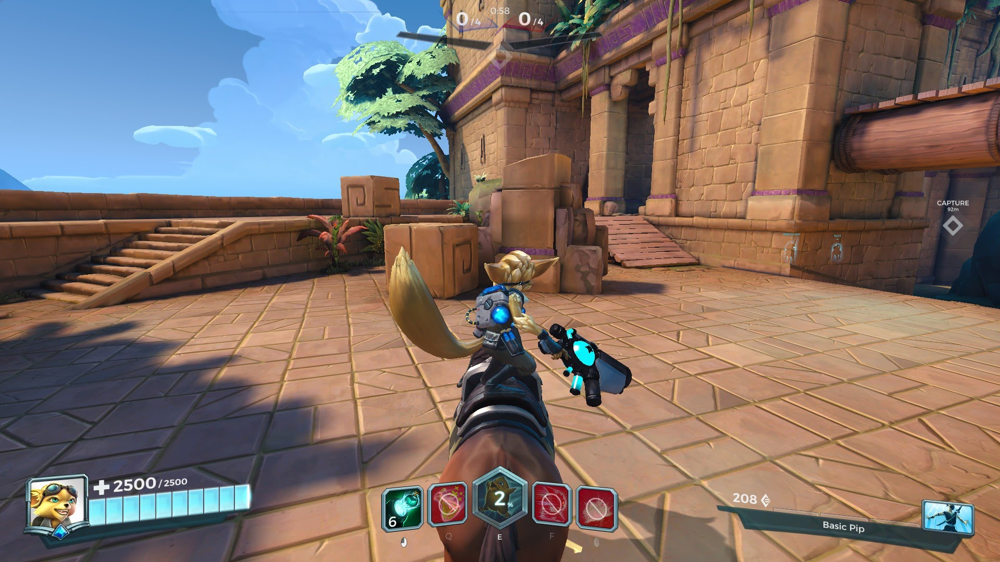
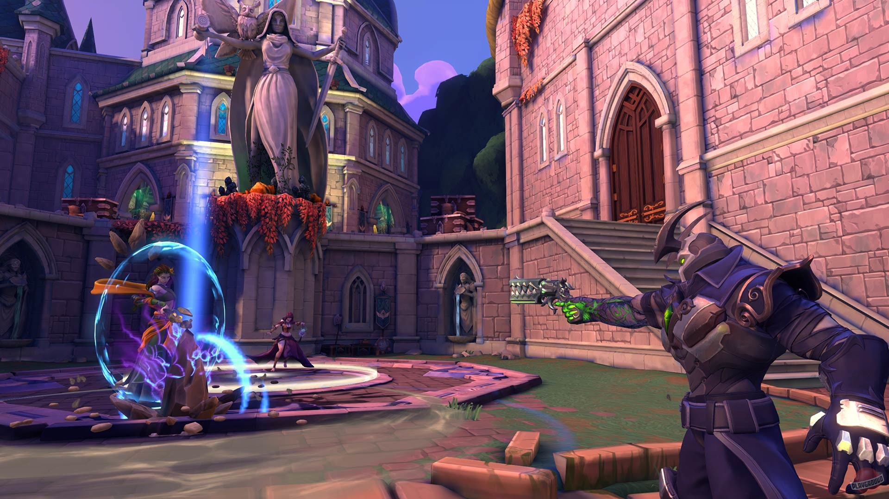
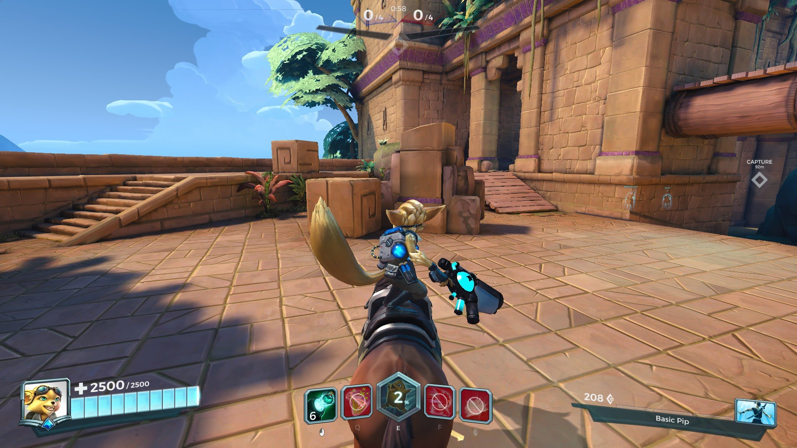
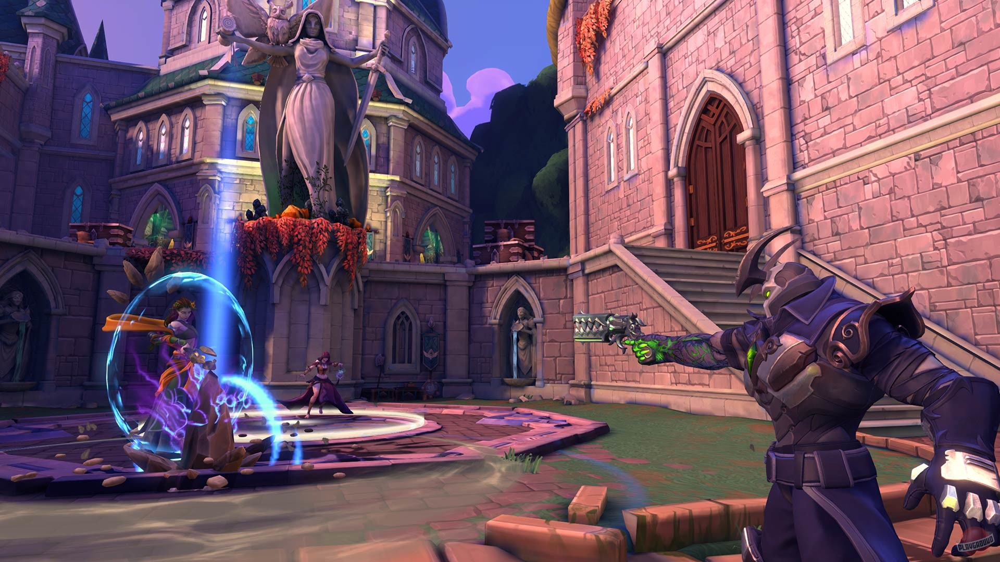
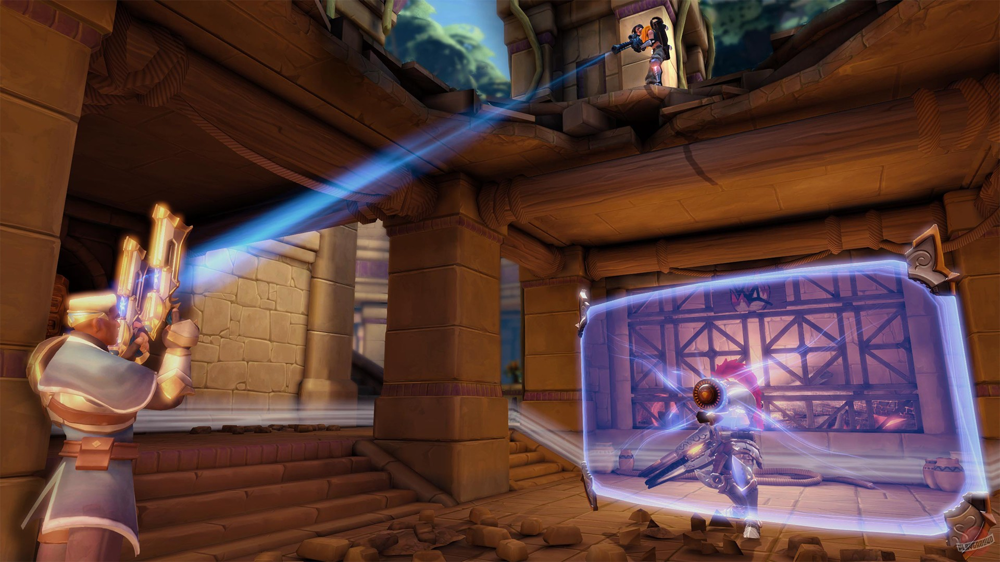
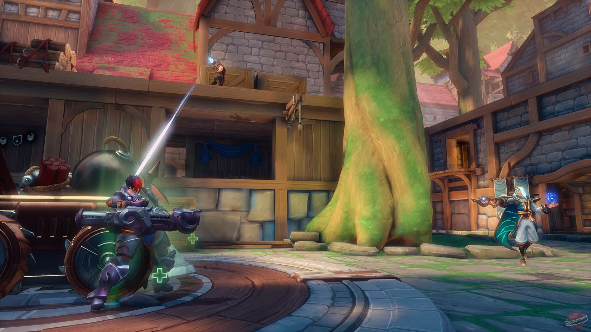
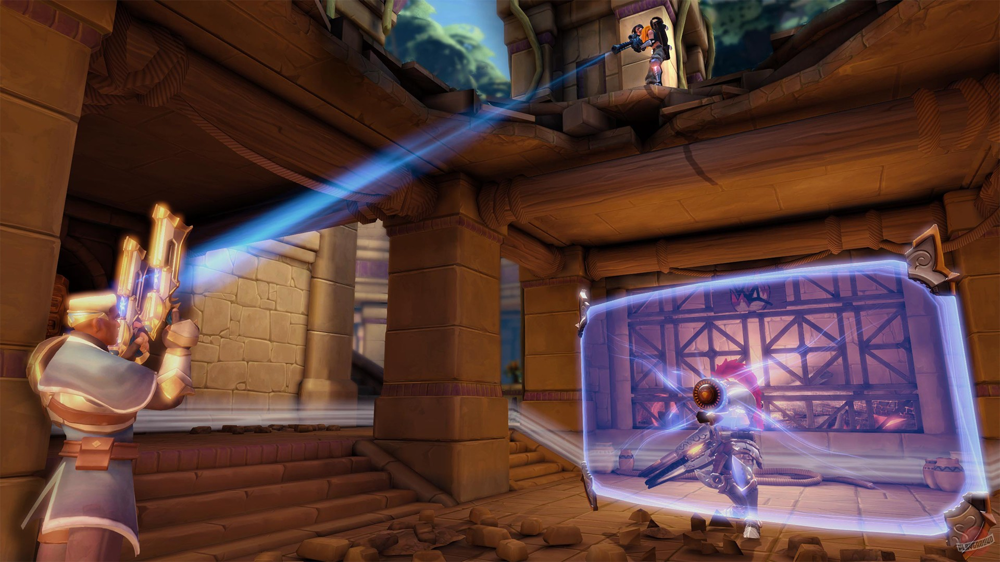
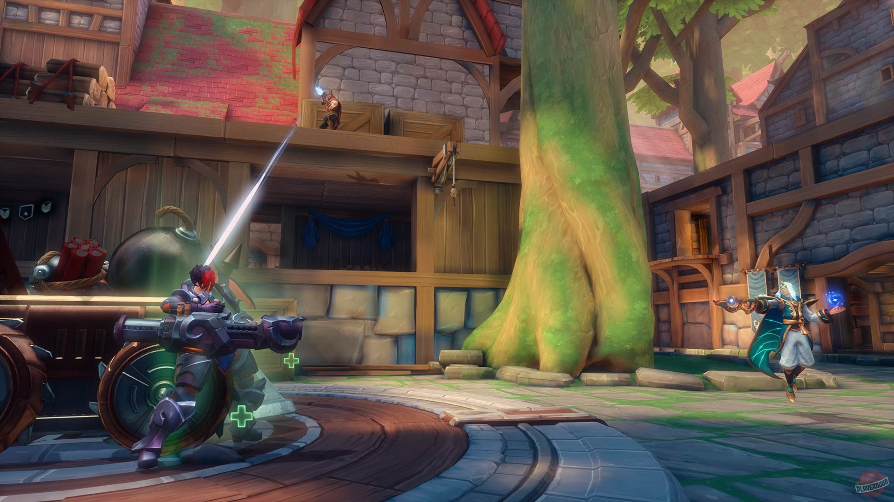

Paladins
Paladins — это бесплатный командный геройский шутер от первого лица, разработанный студией Evil Mojo (издатель — Hi-Rez Studios). Игра часто сравнивается с Overwatch, но имеет свои уникальные механизмы, которые делают её особенной. Основная концепция: Игра сосредоточена на сражениях 5 на 5 в фэнтезийно-научном сеттинге, где игроки выбирают одного из многочисленных Чемпионов, каждый со своими уникальными способностями, ролью и стилем игры. Ключевые особенности и геймплей: Система карт: Это визитная карточка Paladins. Каждый чемпион имеет набор карт, которые усиливают или изменяют его базовые способности. Перед матчем вы создаёте свою собственную «колоду» из 5 карт, что позволяет кастомизировать стиль игры одного и того же чемпиона под разные ситуации и тактики. Например, можно усилить защиту, ускорить восстановление здоровья или уменьшить время отката умений. Магазин предметов: Во время матча за выполнение задач (убийства, помощь, захват точки) вы зарабатываете кредиты. На них можно купить пассивные улучшения в магазине: • Защита от определённого типа урона. • Исцеление для себя или союзников. • Урон против конкретных классов врагов. • Утилиты (например, сокращение времени перезарядки). Это добавляет глубокий стратегический слой: нужно анализировать состав вражеской команды и адаптироваться «на лету». Режимы игры: – Осада (Siege) — основной и самый популярный режим. Команды сражаются за захват центральной точки, после чего победившая сторона должна доставить «ежу» (массивную катящуюся бомбу) к вражеским воротам. – Штурм (Onslaught) — нужно удерживать контроль над одной точкой и набирать очки убийств. – Столкновение (Team Deathmatch) — командный бой до определённого числа убийств. Роли чемпионов: – Фронтлайн (Tank) — танки, берут на себя урон и удерживают ключевые точки. – Урон (Damage) — наносят высокий урон на средней и дальней дистанции. – Штурмовик (Flank) — мобильные убийцы, предназначены для обхода с флангов и устранения уязвимых целей (например, снайперов). – Поддержка (Support) — лекари и буферы, обеспечивают выживаемость команды.
Чем Paladins отличается от Overwatch?: • Карты и магазин: Это главное отличие, дающее огромную вариативность сборок. • Система передвижения (Mount): Вне боя можно призвать скакуна, чтобы быстрее вернуться на поле боя. • Health Fountains: Можно восполнить здоровье у базового фонтана. • Более «долгие» перестрелки: Из-за системы карт и магазина TTK (время до убийства) часто выше, что делает схватки более затяжными и тактическими. Бизнес-модель: Игра полностью бесплатна. Новые чемпионы можно купить за внутриигровую валюту (Золото), которую легко заработать, или за премиальную валюту (Кристаллы). Основной доход студии идёт от продажи косметических предметов: скинов, эмоций, оружия, голосовых пакетов и боевых пропусков с эксклюзивными наградами. Сообщество и киберспорт: У Paladins есть своя преданная аудитория и активная киберспортивная сцена с регулярными турнирами, включая мировые чемпионаты.


 



 



Отзывы
Скажу одно, в Overwatch я ни разу не играл, и судя по другим отзывам игра "слизана" оттуда. Но я не обращаю на это внимание, и если это клон, то по моему самый удачный из всех. Игра превосходит даже TF2, легка в плане геймплея, удобная даже так сказать. Донатить на других героев не стал, но зарабатываю монеты сам. Вполне неплохо. (:з) Хорошая командная и бесплатная игра. Я не пожалел что скачал и провожу в ней своё время. Это мой рай, полностью перехожу в Paladins. ( То чувство когда Paladins лучше Overwatch ). Одна из самых лучших бесплатных игр!
Приветствую всех заглянувших в мой отзыв об игре Paladins! Буквально не так давно узнал об этой игре от своей жены. Игра восхитительная, вот честно вам говорю! Мне она очень зашла. Правда как начал играть, почти сразу же узнал об этом про Paladins: "В феврале 2025 года сообщалось, что разработка Paladins полностью прекратилась из-за массовых увольнений в компании Hi-Rez Studios и её дочерних компаниях Titan Forge, Rally Here и Evil Mojo games. Разработчики объявили, что игра больше не будет получать никаких обновлений, даже незначительных исправлений ошибок. При этом сервера Paladins будут работать." Это очень печальная новость на самом деле! Особенно для фанатов Paladins я уверен, что это был удар. Но очень и очень надеюсь, что хотя бы сервера будут работать всё время и игру никогда не отключат, вот правда. В идеале бы конечно права на игру продали другим разработчикам. Может быть онлайн в игре просел, так как иногда ищет игру по 3-5 минут, но оно того стоит! В любом случае игру рекомендую! Скачивайте и играйте.
Я играл в палладинс почти с самого начала её существования, ещё тогда, когда понятие скилл и различия классов что-то значили... Увы, теперь эта игра превратилась в анскилловое позорище, когда пара персонажей вырезает всю команду противников! Когда танки стали просто дамаггерами с щитами и большим количеством ХП, когда урон хиллов больше, чем дамаг класса урона, когда имбалансных персонажей для детей аппают ещё больше! Я не понимаю чем руководствуются Хай-Резы, но, если тебе больше 13 лет, то сразу становится понятно, кто победит, просто глянув на наличие имб в командах! Увы имбаланс убивает дух соперничества! Игра нескольких персонажей! Не тратьте на неё своё время... ...пока так, игра обречена на смерть. Спасибо!